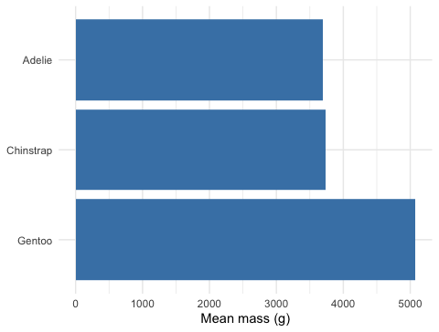
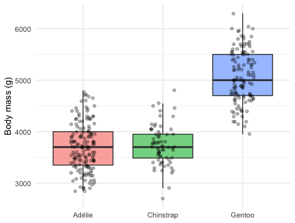

Ordering, renaming, and lumping categories with forcats — and cleaner ggplots
2026-07-05
pivot_longer() / pivot_wider() — reshaped the messy Lake Superior ice datagroup_by() + summarize() and lm() on the tidied resultNote
✅ Transition
Why alphabetical? Because a categorical column is a factor, and its levels default to alphabetical. Today we take control of that order — and of the labels — with the forcats package. You’ll lean on it again next week when you run a one-way ANOVA.
factor(), levels(), fct_count()fct_reorder(), fct_infreq(), fct_rev()fct_recode(), fct_collapse(), fct_lump()fct_relevel()Tools today:
tidyverse (includes forcats)palmerpenguinsTextbook:
Tip
Day 1: create, inspect, reorder. Day 2: rename, lump, model.
This lecture runs in four short chunks over two days. After each chunk you switch to the activity and type the code yourself.
For every code block, do three things:
Note
✅ Why bother? (the evidence)
fct_ family.We will cover: what factors are, why alphabetical order is a problem, and how to create and inspect them.
Tip
🖐 After this chunk: Activity Parts 1–3 (inspect the penguin factors).
A factor is a categorical variable with a fixed, known set of values — its levels — stored in a specific order.
Note
📖 New word
forcats = “for categorical variables” — the tidyverse package (loaded with library(tidyverse)) for working with factors. Every function starts with fct_.
Note
🔮 Predict first: If we make a bar chart of penguin species with no other instructions, in what order will the three bars appear?
Adelie, Chinstrap, Gentoo — alphabetical, because that is the default level order.
Alphabetical is almost never the order you want to show. Factors let you fix that in one line.
📖 R4DS §16.5 — modifying factor order
[1] "factor"[1] "Adelie" "Chinstrap" "Gentoo" class() — confirms it’s a factorlevels() — the ordered set of categoriesfct_count() — how many rows per level (even levels with zero rows show up!)Tip
Make a factor from a string with factor(x) or as_factor(x).
Load the penguins, confirm species and island are factors, list their levels, and make the default (alphabetical) bar chart. Predict the order before you run it.
We will cover: the payoff — reordering factor levels so plots tell the story, with fct_infreq(), fct_reorder(), and fct_rev().
Tip
🖐 After this chunk: Activity Parts 4–6 (reorder bars and boxplots).
fct_infreq() — Order by Frequencyfct_infreq() — biggest group firstfct_rev() to flip to smallest-firstNote
You reorder inside mutate(), then plot. The data itself is unchanged elsewhere.
fct_reorder() — Order by Another VariableNote
🔮 Predict first: We’ll reorder species by their median body mass. Which species ends up last (heaviest)?
This is the one you’ll use constantly.
fct_reorder(f, x, .fun) — order the factor f by a summary of x📖 R4DS §16.4 — fct_reorder()
fct_rev() and Ordered Summary Plots# Mean mass per species, ordered high -> low ----------
penguins_df %>%
group_by(species) %>%
summarize(mean_mass = mean(body_mass_g)) %>%
mutate(species = fct_reorder(species, mean_mass) %>% fct_rev()) %>%
ggplot(aes(x = mean_mass, y = species)) +
geom_col(fill = "steelblue") +
labs(x = "Mean mass (g)", y = NULL) +
theme_minimal()
fct_rev() — reverse the current orderfct_reorder() %>% fct_rev() puts the biggest bar on topDay 1 recap — you can now:
levels() and fct_count()fct_infreq(), fct_reorder(), fct_rev()Day 2 — the deeper cuts:
We will cover: cleaning up messy level labels — fct_recode(), fct_collapse(), fct_lump().
Tip
🖐 After this chunk: Activity Parts 7–9 (rename and lump levels).
fct_recode() — Rename Levels# A tibble: 3 × 2
species n
<fct> <int>
1 Adélie penguin 151
2 Chinstrap penguin 68
3 Gentoo penguin 123fct_recode(f, "new" = "old", ...) — rename one or more levelsWarning
⚠️ Watch out! A misspelled old name is silently ignored — check your levels after.
fct_collapse() — Merge Levels into Groupsfct_collapse() — map many old levels onto a few new onesfct_lump() — Bundle Rare Levels into “Other”fct_lump_n(f, n) — keep the top n, everything else → “Other”fct_lump_min(f, min) — lump any level with fewer than min rows📖 R4DS §16.6 — lumping
Factors look like their labels, but underneath they’re integer codes. So this quietly gives the wrong answer:
The fix — go through character first:
Important
✅ Why show a quiet break?
No error, just wrong numbers. as.numeric() on a factor returns the 1, 2, 3 level codes, not the labels. Any time a factor holds numbers you need to compute with, convert to character first.
Rename the species to full names, collapse them into size groups, lump the islands, and try the as.numeric() trap yourself. Predict each output before you run it.
We will cover: how level order sets the model baseline (fct_relevel), dropping unused levels, and one clean final figure.
Tip
🖐 After this chunk: Activity Parts 10–12 (relevel a model, drop levels, build the final plot).
fct_relevel() — Set the Reference LevelNote
🔮 Predict first: When you fit a model — the regression from Lecture 06, or the ANOVA coming next week — R compares everything to the first level (Adelie here). If we make Gentoo the reference, what changes — the overall test, or the coefficients?
(Intercept) speciesChinstrap speciesGentoo
3700.66225 32.42598 1375.35401 (Intercept) speciesAdelie speciesChinstrap
5076.016 -1375.354 -1342.928 fct_relevel(f, "x") — move level x to the front (the reference)(Intercept) becomes that group’s mean; other coefficients are differences from it📖 R4DS §16.5
[1] "Adelie" "Chinstrap" "Gentoo" [1] "Adelie" "Chinstrap"filter() removes rows, not levels — a “ghost” level remainsfct_drop() (or droplevels()) clears them outWarning
⚠️ Watch out! An empty factor level is the #1 cause of a stray blank space on a boxplot axis.
# Reordered + relabeled in one pipeline ---------------
penguins_df %>%
mutate(
species = fct_recode(species, "Adélie" = "Adelie"),
species = fct_reorder(species, body_mass_g, .fun = median)
) %>%
ggplot(aes(x = species, y = body_mass_g, fill = species)) +
geom_boxplot(alpha = 0.6, outlier.shape = NA) +
geom_point(position = position_jitter(width = 0.15, seed = 42),
alpha = 0.3, size = 1.4) +
labs(x = NULL, y = "Body mass (g)") +
theme_minimal() +
theme(legend.position = "none")
Ordered by mass, relabeled, publication-ready — and the code that made it is three fct_ calls inside one mutate().
This is the everyday payoff: factors are how you make categorical plots say what you mean.
Relevel a model to a new reference, drop an unused level, and build your own reordered + relabeled figure. Predict the reference change before you run it.
Concepts:
fct_reorder(), fct_infreq(), fct_rev()fct_recode(), fct_collapse(), fct_lump()fct_relevel(); clear ghosts with fct_drop()as.numeric() on a factor returns codes — convert to character firstReferences:
common_code/15_factorsUp next — Lecture 11: